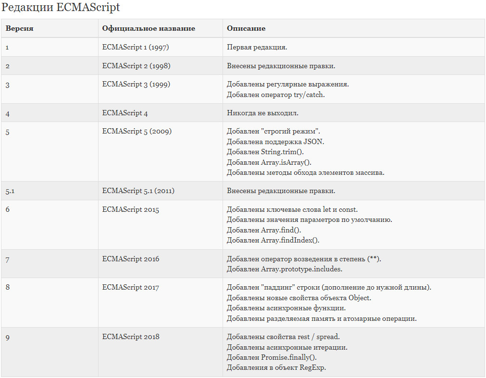

imperative vs declarative styles типы приведение типов опереторы циклы деструктуризация switch
basis
JavaScript — прототипно-ориентированный мультипарадигменный язык програмирования,
который поддерживает императивный, декларативный, функциональный и объектно-ориентированный
стили
JavaScript работает в однопоточном режиме (один стек вызовов), т.е. только одна
операция может быть выполнена в определенный момент времени
Кроссплатформенный язык — использующийся в разных сферах (в браузере, на веб-сервере,
в кофеварке); каждая среда предоставляет свой функционал, который спецификация JavaScript
называет окружением
Динамическая типизация — возможность переменной любого типа присвоить другой тип:
переменной строкового типа присвоить число (это плохо для больших проектов).
В js возможность написания кода со статической типизацией дает TypeScript
JavaScript может выполняться не только в браузере, но и на сервере или на любом другом
устройстве, которое имеет специальную программу, называющуюся «движком» JavaScript.
В браузере для JavaScript доступно всё, что связано с манипулированием веб-страницами,
взаимодействием с пользователем и веб-сервером.
В последнее время появилось много новых языков, которые транспилируются (конвертируются)
в JavaScript, прежде чем запустятся в браузере, например:
CoffeeScript (вводит более короткий синтаксис),
TypeScript, Flow (как и TypeScript добавляет типизацию),
Dart,
Brython (транспилирует Python в JS)
С появлением ES5 (2009 г.) в JS появилась дирректива 'use strict', которая позволяет
использовать новые возможности языка, но при этом не работают старые, изжившие себя
(ошибки или несовершенные решения).
Для обратной совместимости не используют 'use strict'. То есть, чтобы устаревший код
работал, как и раньше, не используют 'use strict'. А для включения новых возможностей ES5+
используют 'use strict'.
Классы и модули автоматически включают строгий режим, поэтому в React компонентах нет
нужды в 'use strict'.
В JavaScript есть два ограничения, касающиеся имён переменных:
- имя переменной должно содержать только буквы, цифры или символы $ и _
- первый символ не должен быть цифрой
Переменные в js должны быть camelCase

Функциональное программирование — это подход в программировании, который опирается
на вычисление выражений (декларативный подход), а не на последовательное выполнение
команд (императивный подход).
Императивное программирование — это описание того, как ты делаешь что-то,
а декларативное — того, что ты делаешь.
Императивный подход (как): Я вижу, что тот угловой столик свободен.
Мы пойдём туда и сядем там.
Декларативный подход (что): Столик для двоих, пожалуйста.
Большая часть кода JS, который мы читаем и пишем, императивная. Однако, с
ростом популярности функционального программирования в JS, декларативные подходы
распространяются все больше.
Декларативный способ обычно скрывает детали реализации и позволяет сосредоточиться
на бизнес-логике, уменьшая объем кода.
императивный стиль
function double (arr) {
let results = []
for (let i = 0; i < arr.length; i++) {
results.push(arr[i] * 2)
}
return results
}
декларативный стиль
function double (arr) {
return arr.map(item => item * 2)
}
В браузере глобальные функции и переменные, объявленные с помощью
var (не let/const!), становятся свойствами глобального объекта window !!
'use strict'
a = 'test'
// ошибка, т.к. в 'use strict' неявное присваивание не работает (не создастся window.a)
console.log(a)
8 основных типов данных:
примитивные:
- undefined (неприсвоеное значение)
- null (неизвестное значение)
- boolean
- Number (любые числа)
- BigInt (целые числа произвольной длины; создание: BigInt(123) или 123n)
- String
- Symbol (для уникальных идентификаторов в объектах)
не примитивный:
- Object
typeof null возвращает 'object' (ошибка языка)
typeof function() {} возвращает 'function'
Виды преобразования:
строковое
численное
логическое
объект в примитив
* значения разных типов при сравнении приводятся к числу!
численное:
undefined становится NaN, не 0
пустой [] преобразуется к 0
любой {} преобразуется к NaN
логическое:
'', 0, null, undefined, NaN - falthy values
'0' и строки с одними пробелами ' ', любые объекты и массивы - truthy values
null и undefined равны друг другу (и сами себе) и не равны любому другому значению
alert(null == undefined) true
console.log(false == []) true - пустой массив преобразуется к 0
console.log(false == {}) false - любой объект преобразуется к NaN
console.log(0 == null) false - null равно или undefined или само себе
console.log(0 == undefined) false - undefined равно или null или само себе
'' + 1 + 0 '10'
'' - 1 + 0 -1
true + false 1
6 / '3' 2
'2' * '3' 6
4 + 5 + 'px' '9px'
'$' + 4 + 5 '$45'
'4' - 2 2
'4px' - 2 NaN
7 / 0 Infinity
' -9\n' + 5 ' -9\n5'
' -9\n' - 5 -14
5 && 2 2
2 && 5 5
0 && 3 0
3 && 0 0
5 || 0 5
0 || 5 5
null + 1 1
undefined + 1 NaN
null == '\n0\n' false
+null == +'\n0\n' true
объект в примитив:
3 варианта преобразования (3 хинта) объекта в примитив:
- string (к строке)
- number (к числу)
- default
алгоритм преобразования таков (эти методы должны возвращать примитив, если определены):
1. Вызвать obj[Symbol.toPrimitive](hint) – метод с символьным ключом Symbol.toPrimitive,
если такой метод существует
2. Иначе, если хинт равен 'string': попробовать вызвать obj.toString() или obj.valueOf(),
смотря какой из них существует
3. Иначе, если хинт равен 'number' или 'default': попробовать вызвать obj.valueOf() или
obj.toString(), смотря какой существует
* на практике часто бывает достаточно реализовать только obj.toString()
т.к. одинаковые типы, то сначало приводятся к строке и потом конкатинируются
[] + [] === '' true (массивы приводятся к строке; [].toString() === '')
{} + {} '[object Object][object Object]'
т.к. разные типы, то сначало приводятся к числу и потом складываются
[] + {} NaN (0 + NaN)
{} + [] === 0 true (пустой блок кода, за которым следует массив)
let a = 1, b = 2
let c = 3 - (a = b + 1)
alert(a) // 3
alert(c) // 0
Такое присваивание работает справа налево (присваивание по цепочке).
Сначала вычисляется самое правое выражение 2 + 2,
и затем результат присваивается переменным слева: c, b и a
a = b = c = 2 + 2
Оператор взятия остатка % (остаток от целочисленного деления a на b)
8 % 3 == 2
4 % 1 == 0
3.5 % 1 == 0.5
3 % 4 == 3
инкремент/декремент можно применить только к переменной!
i++ - инкрементирует i, но возвращает i до инкрементирования
++i - инкрементирует и возвращает инкрементированый i
let counter = 1
let a = counter++ // увеличивает counter, но возвращает старое значение
alert(a) // 1
если результат оператора не используется, а нужно только
увеличить переменную, тогда без разницы, какую форму использовать:
let counter2 = 0
counter2++
++counter2
alert(counter2) // 2
?? - (оператор нулевого слияния) если левый операнд имеет значение
null или undefined - возвращает правый операнд, а иначе - левый
?. - (оператор optional chaining) для исключения ошибок
при обращению к несуществующему свойству объекта, т.е. вместо
выброшеного исключения вернет undefined;
obj.method?.() – вызывает obj.method(), если obj.method
существует, в противном случае возвращает undefined
const data = {
user: {}
}
console.log(data.user.address.street) // Uncaught TypeError: Cannot read
property 'street' of undefined
чтобы не выкинуло ошибку, нужна проверка; можно ее сделать обычным способом:
const street = data && data.user && data.user.address && data.user.address.street;
console.log(street) // undefined
но лучше с помощью optional chaining - короче и понятней
console.log(data.user?.address?.street) // undefined
общие:
- for (начало; условие; шаг) {
начало выполняется один раз при входе в цикл;
если выполняется условие -> выполняется тело -> шаг...
}
- while (condition) { }
- do { } while (condition)
используется в итерируемых объектах (с методом [Symbol.iterator](),
возвращающим объект-итератор с методом next());
в строках, массивах и коллекции Map изначально встроен, в объектах - нет
- for (let fruit of fruits) { }
для объектов:
- for (let key in object) { }
Метки для break/continue:
outer: for (let i = 0; i < 3; i++) {
for (let j = 0; j < 3; j++) {
let input = prompt(`Значение (${i},${j})`, '')
if (!input) break outer
}
}
let {prop : varName = default, ...rest} = object
let [item1 = default, item2, ...rest] = array
пример:
let options = {
size: {
width: 100,
height: 200
},
items: ['Cake', 'Donut'],
extra: true
}
let {
size: { // положим size сюда
width,
height
},
items: [item1, item2], // добавим элементы к items
title = 'Menu' // отсутствует в объекте (=> будет значение по умолчанию - 'Menu')
} = options;
switch(x) {
case 'val1': // if (x === 'val1')
...
[break]
case 'val2': // if (x === 'val2' || x === 'val3')
case 'val3':
...
[break] // если нет break или return - пойдет ниже
default:
...
[break]
}
methods & tricks
numbers strings objects arrays
alert( NaN === NaN ) // false
num.toFixed(n) - округляет число до n знаков после точки и возвращает строку,
допускает неточность! ( 6.35.toFixed(1) == 6.3 )
isNaN(value) - преобразует в число и проверяет является ли оно NaN
isFinite(value) - преобразует в число и возвращает true, если оно
является обычным числом - не NaN/Infinity/-Infinity
parseInt('str') - возвращает целое число из строки или NaN
parseFloat('str') - возвращает дробное число из строки или NaN
tricks:
способ устраняющий неточность:
Math.round(6.35 * 10) / 10 ( 6.35 -> 63.5 -> 64(rounded) -> 6.4 )
* все позиции начинаются с 0, полученные подстроки не меняют исходную строку
str.indexOf(substr [, pos]) - [number or -1], индекс первой совпавшей подстроки
начиная с позиции pos
str.startsWith(substr [, pos]) - [boolean]
str.includes(substr [, pos]) - [boolean]
str.split(delim) - разбивает строку на массив по заданному разделителю delim
str.trim() - убирает пробелы в начале и конце строки
str.slice(start [, end]) - подстрока от start до (не включая) end,
отрицательные значения начинаются с конца
str.substring(start, end) - подстрока от start до (не включая) end,
отрицательные значения интерпретируются как 0
str.charAt(pos) - возвращает символ на позиции pos
str.codePointAt(pos) - возвращает код символа на позиции pos
String.fromCodePoint(code) - создаёт символ по его коду code
str.match(regex) - [arrayOfMatches or null], например:
'Любо, братцы, любо!'.match(/любо/gi) ['Любо', 'любо']
str.replace(regex|substr, newSubStr|func) - возвращает новую строку с некоторыми или всеми
сопоставлениями с шаблоном, заменёнными на заменитель.
Шаблон может быть строкой или регулярным выражением, а
заменитель может быть строкой или функцией, вызываемой
при каждом сопоставлении; если первый аргумент replace
является строкой, он заменяет только первое совпадение.
'We will, we will'.replace(/we/i, 'I') I will, we will
str.search(regex) - [number or -1], индекс первого совпадения с
regex в строке str или -1, если совпадения нет
regex.test(str) - [boolean], проверяет, есть ли хоть одно совпадение с regex в строке str
Object.getOwnPropertySymbols() - возвращает массив только символьных ключей
Object.getOwnPropertyDescriptor(obj, propName) - возвращает объект, т.н. «дескриптор свойства»:
он содержит значение свойства и все его флаги
Object.defineProperty(obj, propName, descriptor) - чтобы изменить флаги; если св-ва нет то оно
создается с указанными флагами; если какой то
флаг не указан явно, ему присваивается false
Object.defineProperties(obj, { prop1: descriptor1, prop2: descriptor2 })
Object.getOwnPropertyDescriptors(obj) - получить дескрипторы всех свойств
пример дескриптора:
{
'value': 1,
'writable': false,
'enumerable': false,
'configurable': false
}
writable – если true, свойство можно изменить, иначе оно только для чтения
enumerable – если true, свойство перечисляется в циклах, иначе циклы его игнорируют
configurable – если true, свойство можно удалить, а флаги можно изменять
tricks:
not-deep cloning (вложенные объекты не клонируются):
- const obj2 = {...obj1}
копирует св-ва (и строковые и символьные) всех объектов srcN в dest
- Object.assign(dest, [src1, src2...]) const copy = Object.assign({}, obj)
клонирование объекта вместе с его флагами
- const clone = Object.defineProperties({}, Object.getOwnPropertyDescriptors(obj))
точная копия obj c тем же прототипом - «продвинутое» клонирование объекта
- const clone = Object.create(Object.getPrototypeOf(obj), Object.getOwnPropertyDescriptors(obj))
deep cloning:
этот прием нельзя использовать для копирования методов объекта (JSON не поддерживает функции)
- const clone = JSON.parse(JSON.stringify(obj/arr))
* псевдомассивы – это объекты, у которых есть индексы и свойство length
Array.isArray(value) - [boolean]
Array.from() - массив из итерируемого объекта или псевдомассива
меняют исходный массив: splice, sort, forEach, reverse *
добавление/удаление элементов:
push(...items) - добавляет items в конец массива
pop() - удаляет элемент в конце массива и возвращает его
unshift(...items) - добавляет items в начало массива
shift() - удаляет элемент в начале массива и возвращает его
arr.slice([start[, end]]) - возвращает новый подмассив от start до (не включая) end
arr.concat([arg1, arg2...]) - создаёт новый массив, состоящий из arr, arg1, arg2...
arr.splice(index[, deleteCount[, elem1, ...elemN]]) - начиная с позиции index, удаляет
deleteCount элементов и вставляет elem1,
...elemN на их место;
возвращает новый массив из удалённых эл-ов
arr.every((item, index, array) => {}) - [boolean], проверяет удовлетворяют ли все элементы
массива условию, заданному в передаваемой функции;
возвращает true при любом условии для пустого массива
поиск в массиве:
arr.indexOf(item[, from]) - [number or -1], поиск позиции item
arr.includes(item[, from]) - [boolean]
arr.find( (item, index, array) => {}) - возвращает первый найденный элемент, на
котором колбэк вернёт true, иначе undefined
arr.findIndex( (item, index, array) => {}) - возвращает индекс первого найденного элемента,
на котором колбэк вернёт true, иначе -1
преобразование массива:
arr.forEach( (item, index, array) => {}) - выполняется один раз для каждого элемента,
возвращает undefined
* нельзя остановить или прервать цикл
кроме как выбрасыванием исключения
arr.map( (item, index, array) => {}) - создаёт новый массив с результатом вызова
указанной функции для каждого элемента массива;
в cb возвращается новое значение вместо элемента,
например: return item.length
arr.sort( [compareFunc(a, b) {}]) - без compareFunc сортирует элементы массива
как строки.
с compareFunc собственный порядок сортировки:
- если возвращает число < 0, то a идёт первым;
- если возвращает число > 0, то b идёт первым;
пример сортировки по возрастанию: return a - b.
Если нужно отсортировать массив объектов
по определенному полю (например, createdAt):
sort({ createdAt: -1 })
arr.reverse() - меняет порядок элементов на обратный
arr.join(glue) - создаёт строку из элементов arr, вставляя glue
между ними
arr.filter( (item, index, array) => {}) - возвращает новый массив из всех подходящих
элементов: для которых cb вернул true;
если ничего не найдено, возвращает пустой []
let value = arr.reduce((previousVal, item, index, array) => { - возвращает единое значение
previousValue – возвращаемый результат предыдущего на основе всего массива
вызова на каждой итерации; previousValue = initial
при первом вызове, если передан initial
}, [initial])
tricks:
arr.length = 0 самый простой способ очистить массив
[1, 2, 3, 4, 5].length = 3 превращает в [1, 2, 3]
делаем массив с уникальными значениями:
const array = [1, 1, 2, 3, 5, 5, 1]
const uniqueArray = [...new Set(array)] [1, 2, 3, 5]
делаем объект из массива:
const users = [1, 2, 3, 4, 5]
const usersObject = {...users} {'0':1, '1':2, '2':3, '3':4, '4':5 }
Boolean(val) return only truthy values:
[1, 0, 2, null].filter(Boolean) [1, 2]
not-deep cloning:
- arr.slice()
- arr.concat()
- let arr2 = [...arr1]
deep cloning:
- let clone = JSON.parse(JSON.stringify(arr))
Object
Глобальный объект предоставляет переменные и функции, доступные в любом месте программы.
По умолчанию это те, что встроены в язык (Array, Error...) или среду исполнения (location...).
В браузере он называется window, в Node.js — global, в другой среде исполнения может
называться иначе. Недавно globalThis был добавлен в JS как стандартизированное имя для
глобального объекта, которое должно поддерживаться в любом окружении.
Окружение предоставляет свои объекты и дополнительные функции, в дополнение
базовым языковым. Браузеры, например, дают средства для управления веб-страницами.
Node.js делает доступными какие-то серверные возможности.
На схеме в общих чертах показано, что доступно для JS в браузерном окружении:
window (globalThis)
/ | \
DOM BOM JavaScript
document (window.document navigator (window.navigator) Object (window.Object)
- экземпляр класса HTMLDocument) screen Array
... location Function
frames Error
history ...
console
XMLHttpRequest
'use strict'
alert(this) undefined (без 'use strict' - window !!)
мутирование - изменение или удаление полей объекта
оператор in (проверка существования свойства):
"key" in object
оператор delete (удаление свойства):
delete obj.prop
динамическое свойство (если имя свойства в переменной или задано выражением):
{
[prop]: val
}
someObj[prop]
lookup maps (карта поиска):
const sourceTypeLabel = {
vimeoUser: 'User',
...
}[sourceType]
как альтернатива switch с IIFE:
const sourceTypeLabel = (() => {
switch (sourceType) {
case 'vimeoUser':
return 'User'
...
}
})()
Помимо обычных свойств-данных у объектов есть свойства-аксессоры.
Они представлены методами «геттер» и «сеттер». Эти специальные методы
ведут себя как св-ва снаружи объекта/класса
let obj = {
get propName() {
геттер, срабатывает при чтении obj.propName
},
set propName(value) {
сеттер, срабатывает при записи obj.propName = value
}
}
В JS объекты имеют специальное скрытое свойство [[Prototype]], которое либо равно
null, либо ссылается на другой объект. Этот объект называется прототип.
Свойство __proto__ у объектов ссылается на прототип объекта, оно является
геттером/сеттером для [[Prototype]]
* У функций и классов так же есть прототип, доступ к которому не с помощью свойства
__proto__, а с помощью свойства prototype: Func.prototype / SomeClass.prototype
Когда мы хотим прочитать свойство из object, а оно отсутствует, JS автоматически
берёт его из прототипа - прототипное наследование
Все встроенные объекты следуют одному шаблону:
- методы хранятся в прототипах (Array.prototype, Object.prototype, Date.prototype и т.д.)
- сами объекты хранят только данные (элементы массивов, свойства объектов, даты)
Цикл for..in проходит не только по собственным, но и по унаследованным свойствам объекта,
кроме св-в объкта из «вершины иерархии» - Object.prototype, так как эти св-ва с флагом
"enumerable": false - не перечислимы.
Если унаследованные свойства не нужны, то мы можем отфильтровать их при помощи встроенного
метода obj.hasOwnProperty(key), который наследуется от Object.prototype.hasOwnProperty
Операции записи/удаления работают непосредственно с объектом, они не используют
прототип, если это обычное свойство, а не сеттер.
Сеттер из прототипа используется для записи
Итерируемый объект (итератор) - объект, который можно перебрать с помощью цикла for of.
Такой объект должен иметь метод [Symbol.iterator]()
const generateNumbers = {
start: 1,
end: 10
}
generateNumbers[Symbol.iterator] = function() {
let current = this.start
let last = this.end
return {
next() {
if (current <= last) {
return {
done: false,
value: current++
}
} else {
return {
done: true
}
}
}
}
}
for (let number of generateNumbers) {
console.log(number)
}
functions
Функция – это объект. Изначально имеет свойства name и length (количество аргументов,
остаточные параметры не считается).
По умолчанию все функции имеют F.prototype = {constructor: F}.
При создании функции параметры копируются в локальные переменные
У каждой выполняемой функции / блока кода (например цикл) / скрипта есть связанный с
ними внутренний (скрытый) объект, называемый лексическим окружением - LexicalEnvironment,
который хранит все локальные переменные и this + ссылку на внешнее LexicalEnvironment
* новое лексическое окружение функции создаётся каждый раз, когда
функция выполняется => один вызов – одно лексическое окружение
* функция навсегда запоминает ссылку на лексическое окружение, где она была создана
контекст функции - значение this внутри функции.
* потеря контекста происходит, если ф-я/метод вызываются 'без точки'
или если к ф-ии/методу не был привязан контекст с помощью bind
область видимости (scope) - часть программы, в пределах которой переменная доступна
для использования; виды scope:
глобальная область видимости целого файла
функциональная внутри функции
блочная блок из фигурных скобок { ... }
// первая область видимости
let fruit = 'Banana'
{
// вторая область видимости
let fruit = 'Apple'
}
if (true) { // область видимости условного оператора }
for (let i = 0; i > 5; i++) { // область видимости цикла }
function test() { // область видимости функции }
hoisting - все объявления переменных var «всплывают» в самый верх функции или
глобальной scope со значением undefined (блочная scope не влияет на
hoisting для var, т.к. у var нет блочной scope);
так же всплывают и объявления function declaration (можно вызывать
до объявления), в отличае от FE
замыкание (closure) - это комбинация функции и лексического окружения, в котором
эта функция была определена. Замыкание даёт доступ к scope
внешней функции из внутренней функции
У стрелочной функции нет своего «собственного» this и переменной
arguments (они берутся из внешней не стрелочной). Полезно для создания
декораторов, когда нам нужно пробросить вызов с текущими this и arguments:
function defer(f, ms) {
return function() { контекст и аргументы при вызове f возьмутся от этой ф-ии
setTimeout(() => f.apply(this, arguments), ms)
}
}
[].join.call(arr) - пример заимствования метода
func.bind(thisArg[, arg1[, arg2[, ...]]]) - создаёт новую функцию с привязанным контекстом
thisArg и предустановленными аргументами argN...
сигнатура функции - формальное описание типов параметров и типа возвращаемого
значения функции:
// length :: String → Number
const length = s => s.length
callback — это функция, переданная в другую функцию в качестве аргумента,
которая затем вызывается по завершению какого-либо действия
IIFE — (immediately-invoked function expressions) функция, запускаемая сразу
после объявления; использовалась в ES5- вместо модулей для создания
собственной области видимости
listener (слушатель) — функция-callback, срабатывающая на определенное событие
рекурсия — вызов функцией самой себя. Когда функция вызывает саму себя, это
называется шагом рекурсии. Любая рекурсия может быть переделана в цикл.
И это иногда требуется для оптимизации работы.
В рекурсии обязательно должно быть условие прерывание этой рекурсии,
иначе произойдет зацикленность и stackOverflow
функция высшего порядка (hof) — это функция, которая может принимать другую функцию
в качестве аргумента или возвращать другую функцию в
качестве результата
идемпотентность (детерминированность) — приминительно к ф-ии это значит что сколько ни
передавай одни и те же аргументы, она всегда
вернет один и тот же ответ
чистая (pure) функция — функция, удовлетворяющяя 2 условиям:
1. идемпотентная и не может ничего не вернуть
2. нет side-effects (побочный эффект - любая работа, выполняемая
функцией, не связаная с вычислением конечного результата),
например: изменение входных ссылочных типов данных, console.log,
http запросы, изменение в файловой системе, запросы DOM...
декоратор — это обёртка (hof) вокруг функции, которая изменяет поведение
последней; основная работа по-прежнему выполняется внутренней функцией
каррирование — это трансформация, которая дает возможность частичного вызова
ф-ии: f(a)(b)(c) вместо обычного вызова f(a, b, c); это позволяет
создавать частично применённые ф-ии; возможна реализация методом bind()
function mul(a, b) {
return a * b
}
const double = mul.bind(null, 2)
alert( double(3) ) // 6
let name = 'John'
function sayHi() {
alert('Hi, ' + name)
}
name = 'Pete'
sayHi() // Pete, т.к. на момент вызова во внешнем LE name уже переопределена
// поправить не меняя var на let в круглых скобках
const button = document.getElementById('button')
for (var i = 0; i < 3; i++) {
// var z = i // не решит проблему, просто 3 раза выведется число 2, взятое
// из глобальной scope (глобальное LE); т.к. у var нет блочной
// scope, то z не будет записываться в блочные LE на каждой
// итерации, но будет перезапись z в глобальном LE
let x = i // решит проблему - на каждой итерации создастся LE c
// переменной x, из которого listener и возьмет ее
button.addEventListener('click', function(e) {
// console.log(z)
console.log(x) // 0, 1, 2
})
}
button.click()
let obj, method
obj = {
go: function() { alert(this) }
}
(obj.go)() // [object Object], доступ к методу через точку срабатывает первым
(method = obj.go)() // [object Window], потеря контекста, т.к. method только ссылается на go
function makeCounter() {
let count = 0
return function() {
return count++ // замыкание переменной count
}
}
let counter = makeCounter() // при вызове создается LE
alert( counter() ) // 0
alert( counter() ) // 1
let counter2 = makeCounter() // создаем новый счетчик со своим LE
alert( counter2() ) // 0
function Counter() {
let count = 0
this.up = function() {
return ++count
}
}
let counter = new Counter() // в экземпляре нет св-ва count
console.log( counter.up() ) // 1 ф-я запоминает ссылку на LE, где она была создана
constructors & classes
В ES5 не было классов, объекты создавались конструкторами - обычными функциями,
чье имя принято называть с большой буквы.
Сама функция и есть конструктор (как метод constructor в классах), а this внутри
конструктора - контекст, указывающий на создаваемый Конструктором экземпляр (объект).
Свойство функции-конструктора F.prototype устанавливает [[Prototype]] для новых
экземпляров при вызове new F(). По умолчанию все функции имеют F.prototype = {constructor: F}
const Animal = function(options) {
this.name = options.name
this.color = options.color
// лучше задавать методы через прототип, т.к. мы можем изменить метод в прототипе далее
// в коде, а если мы задаем внутри конструктора, то больше мы не имеем доступа к методу
this.eat = function() {
console.log('dog eat meat, name:', this.name)
}
}
Animal.prototype.voice = function() {
console.log('gav from:', this.name)
}
// создание экземпляра:
const dog = new Animal({name: 'Rex', color: '#fff'})
// наследование (Cat от Animal) реализовывалось так:
const Cat = function(options) {
Animal.apply(this, arguments) // вызываем родительский конструктор (обычную ф-ю)
this.hasTail = options.hasTail
this.size = 'big'
}
// указываем вручную (в отличае от классов) наследование прототипов:
Cat.prototype = Object.create(Animal.prototype)
Cat.prototype.constructor = Cat
// переопределяем метод в прототипе:
Animal.prototype.voice = function() {
console.log('this sound goes from:', this.name)
}
// расширяем метод voice у Cat родительским методом voice:
Cat.prototype.voice = function(params) {
Animal.prototype.voice.apply(this, arguments)
console.log(this.name + ' says miay')
}
const cat = new Cat({name: 'Murzik', color: '#000', hasTail: true})
Класс - продвинутый способ создания объектов, вместо обычного конструктора.
Классы еще называют абстракциями.
Методы класса попадают в его свойство prototype, откуда наследуются.
После свойств и методов запятая не ставится.
Вызываются классы как и конструкторы: new MyClass()
class MyClass {
// при создании экземпляра вызывается метод constructor, если он есть
constructor(name, surname) { // свойства и методы присваиваются экземпляру
this._name = name;
this._surname = surname;
this.func = function() {} // методы из constructor не попадают в MyClass.prototype
}
// свойство не из constructor() так же присваивается экземпляру, но с фиксированным value
prop = value
// методы объявляются без ключевого слова function
method(...) {} // методы не из constructor() идут в prototype (в т.ч геттеры/сеттеры)
get fullName() {
// срабатывает при чтении obj.fullName
return `${this._name} ${this._surname}`
}
set fullName(value) {
// срабатывает при записи obj.fullName = val
[this._name, this._surname] = value.split(" ")
}
// не присваивается экземпляру, эквивалентен MyClass.propStatic = value
static propStatic = value
// не присваивается экземпляру, эквивалентен MyClass.methodStatic = function() {}
static methodStatic() {}
// инкапсуляция (отделение внутреннего интерфейса от внешнего) св-в или методов:
_method () {} // защищённый метод
#method () {} // приватный метод
}
неформальное правило - обращаться к полю, начинающемуся с _, только из его класса и классов, унаследованных от него защищённые поля имеют префикс _ JS гарантирует, что мы можем получить доступ к таким полям только внутри класса приватные свойства и методы должны начинаться с #
пример класса:
class Sidebar {
constructor(selector) {
this.$el = document.querySelector(selector)
this.init() // в конструкторе можно выполнять какие то действия
}
init() {
this.$el.insertAdjacentHTML('after begin', this.template)
}
get template() {
return '<h1>template</h1>'
}
}
Наследование классов имеет синтаксис 'class Child extends Parent'.
При этом Child.prototype.__proto__ будет равен Parent.prototype.
При наследовании классов наследуются все свойства и методы (в т.ч. и не из
конструктора).
Если у Child не указан конструктор, то он унаследуется от Parent или от ближайшего
родительского класса, у которого есть метод constructor (если есть).
Если необходимо переопределить конструктор у Child, то обязателен вызов конструктора
родителя с помощью ключевого слова super() в конструкторе Child до обращения к this.
Можно вызвать super.method() в методе Child для обращения к методу родителя Parent.
Так же можно вызвать метод родителя с помощью super.method() и у обычных объектов,
наследующих друг от друга
Также можно присвоить свойство или метод самой функции-классу, а не её prototype.
Для этого перед свойством или методом ставится слово static. Такие методы называются
статическими. Эти свойства или методы не будут иметь отношения к создаваемым объектам.
Статические свойства и методы наследуются между классами при 'class Child extends Parent',
так как Child.prototype.__proto__ == Parent.prototype и Child.__proto__ == Parent
(двойное наследование)
пример наследования:
class Parent {
constructor(name) {
this.name = name;
}
hello() {
alert(`hello ${this.name}`)
}
static run() {}
}
class Child extends Parent {
constructor(name, age) {
super(name); // вызываем родительский конструктор
this.age = age;
}
say(arg) {
super.hello();
this.age += arg;
}
}
У встроенных классов есть собственные статические методы, например Object.keys,
Array.isArray. Обычно, когда один класс наследует другому, то наследуются и статические
методы. Но встроенные классы – исключение, они не наследуют статические методы
друг друга.
Например, и Array, и Date наследуют от Object, так что в их экземплярах доступны методы
из Object.prototype. Но Array.[[Prototype]] не ссылается на Object, поэтому нет методов
Array.keys() или Date.keys()
Object -> Object.prototype
|
|
| A.prototype.__proto__ === Object.prototype
|
|
class A -> A.prototype (каждая функция (конструктор) и
| | класс имеет свойство prototype)
| |
| |
| | B.prototype.__proto__ === A.prototype
| |
class B extends A -> B.prototype
(B.__proto__ === A) /
| /
| /
| /
| /
| / new B().__proto__ === B.prototype
| /
| /
| /
const myObj = new B() myObj получает свойства и методы из метода
constructor (свойства может получить и не из
constructor). Методы наследует от B.prototype
Symbol
В качестве ключей для свойств объекта могут использоваться только строки или символы.
Символ представляет собой уникальный идентификатор в объекте.
Символы игнорируются циклом for…in. А вот Object.assign, в отличие от цикла for..in,
копирует и строковые и символьные свойства
Создаём новый символ id:
let id = Symbol()
при создании, символу можно дать описание (имя), в основном
использующееся для отладки кода;
для любых символов доступно свойство description, возвращее имя
let id = Symbol('descr')
Даже если мы создадим множество символов с одинаковым описанием, это всё равно
будут разные символы. Описание – это просто метка, которая ни на что не влияет.
если мы хотим использовать символ при литеральном объявлении
объекта {...}, его необходимо заключить в квадратные скобки:
let id = Symbol('id')
let user = {
name: 'Вася',
[id]: 123 // просто id: 123 не сработает, т.к. нам нужно
} // использовать значение переменной id в качестве ключа
читаем глобальный символ из глобального реестра (метод for) и записываем
его в переменную; если символ не существует, то он будет создан с именем;
глобальный реестр нужен для обращения к одному и тому же символу
let sym = Symbol.for('id')
принимает глобальный символ и возвращает его имя (метод keyFor)
Symbol.keyFor(sym) // id
Существует множество «системных» символов, использующихся внутри самого JS,
и мы можем использовать их, чтобы настраивать различные аспекты поведения объектов:
Symbol.hasInstance
Symbol.isConcatSpreadable
Symbol.iterator
Symbol.toPrimitive (позволяет описать правила преобразования к примитиву)
…и т.д.
Map & Set
Map и Set имеют тип object
Map – это коллекция пар ключ-значение, как и Object. Но основное
отличие в том, что Map позволяет использовать ключи любого типа.
методы и свойства Map:
new Map([iterable]) – создаёт коллекцию, можно указать перебираемый объект
(обычно массив) из пар [ключ, значение] для инициализации
map.set(key, value) – записывает по ключу key значение value
map.get(key) – возвращает значение по ключу или undefined, если ключ key отсутствует
map.has(key) – возвращает true, если ключ key присутствует в коллекции, иначе false
map.delete(key) – удаляет элемент по ключу key
map.clear() – очищает коллекцию от всех элементов
map.size – возвращает текущее количество элементов
методы для перебора:
map.keys() – возвращает итерируемый объект по ключам
map.values() – возвращает итерируемый объект по значениям
map.entries() – возвращает итерируемый объект по парам вида [ключ, значение],
этот вариант используется по умолчанию в for..of
Set – это особый вид коллекции - «множество» значений (без ключей),
где каждое значение может появляться только один раз
основные методы Set:
new Set([iterable]) – создаёт Set, и если в качестве аргумента был предоставлен итерируемый
объект (обычно это массив), то копирует его значения в новый Set
set.add(value) – добавляет значение (если оно уже есть, то ничего не делает), возвращает
тот же объект set
set.delete(value) – удаляет значение, возвращает true если value было в множестве на момент
вызова, иначе false
set.has(value) – возвращает true, если значение присутствует в множестве, иначе false
set.clear() – удаляет все имеющиеся значения
set.size – возвращает количество элементов в множестве
методы для перебора:
set.keys() – возвращает итерируемый объект для значений
set.values() – то же самое, что и set.keys()
set.entries() – возвращает перебираемый объект для пар вида [значение, значение]
* Мы можем перебрать содержимое объекта Set как с помощью метода for..of, так и используя
set.forEach((value, valueAgain, set) => {} - value и valueAgain одно и то же значение
WeakMap – это Map-подобная коллекция, позволяющая использовать в качестве ключей
только объекты, и автоматически удаляющая их вместе с соответствующими
значениями, как только они становятся недостижимыми иными путями.
WeakSet – это Set-подобная коллекция, которая хранит только объекты и удаляет их,
как только они становятся недостижимыми иными путями.
WeakMap и WeakSet используются как вспомогательные структуры данных в дополнение к «основному»
месту хранения объекта. Если объект удаляется из основного хранилища и нигде не используется,
кроме как в качестве ключа в WeakMap или в WeakSet, то он будет удалён автоматически.
Date
UTC — стандарт времени
GMT — часовой пояс UTC+0
ISO (ISO 8601) — формат даты и времени: YYYY-MM-DDTHH:mm:ss.sssZ
timestamp – количество миллисекунд, прошедших с 1 января 1970 года UTC+0
* месяцы и дни недели начинаются с 0 (январь/воскресенье - 0)
создать объект Date с временем, равным количеству мс, прошедших с 1 января 1970 года UTC+0
или
создать объект Date с временем из строки, формат строки может быть любой:
'2020-04-28T13:43:20.000Z' или 'Tue Apr 7 2020 16:43:20 GMT+0300 (Восточная Европа, летнее время)')
new Date([milliseconds or dateString]) без аргумента создаст объект с текущей датой
getFullYear() - получить год (4 цифры)
getMonth() - получить месяц, от 0 до 11
getDate() - получить день месяца, от 1 до 31
getHours(), getMinutes(), getSeconds(), getMilliseconds()
getDay() - получить день недели от 0 (воскресенье) до 6 (суббота)
getTime() - получить timestamp
getTimezoneOffset() - возвращает разницу в минутах между местным часовым поясом и UTC+0
* у всех этих методов, кроме setTime(), есть UTC-вариант, например: setUTCHours()
setFullYear(year, [month], [date])
setMonth(month, [date])
setDate(date)
setHours(hour, [min], [sec], [ms])
setMinutes(min, [sec], [ms])
setSeconds(sec, [ms])
setMilliseconds(ms)
setTime(ms) - установить timestamp
автоисправление – это очень полезная особенность объектов Date. Можно устанавливать
компоненты даты вне обычного диапазона значений, а объект сам себя
исправит: let date = new Date(2013, 0, 32) // 1st Feb 2013
Если объект Date преобразовать в число, то получим timestamp по аналогии с date.getTime().
Важный побочный эффект - даты можно вычитать, в результате получаем разность в миллисекундах:
new Date() - new Date('2020-04-28T13:43:20.000Z')
методы:
dateObj.toString() - приводит к строке:
Wed Jul 28 1993 14:39:07 GMT-0600 (PDT)
dateObj.toDateString() - возвращает часть, содержащую только дату объекта Date
в виде человеко-читаемой строки на американском английском:
Wed Jul 28 1993
dateObj.toLocaleDateString([locales [, options]]) - возвращает строку с языко-зависимым
представлением: 16.05.2020
dateObj.toJSON() - возвращает представление объекта в виде JSОN
( эквивалентен JSON.stringify(dateObj) )
другие методы:
Date.now() - получить timestamp (если нужно измерить время - бенчмаркинг).
* это менее затратный эквивалент new Date().getTime()
Date.parse(str) - считывает дату из строки, возвращает timestamp or NaN.
Формат строки может быть любой
performance.now() - в браузерах есть метод performance.now().
Возвращает количество миллисекунд с начала
загрузки страницы с точностью до микросекунд
возвращает количество миллисекунд, прошедших с 1 января 1970 года 00:00:00 по UTC
Date.UTC(year[, month[, day[, hour[, minute[, second[, millisecond]]]]]])
const utcDate = new Date( Date.UTC(0, 0, 0, 0, 0, 0) )
console.log( utcDate.toUTCString() ) // Sun, 31 Dec 1899 00:00:00 GMT
JSON
JSON поддерживает: объекты, массивы, строки, числа, true/false и null для сериализации поддерживаемых значений в JSON (становится строкой) JSON.stringify() для декодирования JSON обратно в объект/примитив JSON.parse() * если объект имеет метод toJSON(), то он вызывается при вызове JSON.stringify для этого объекта * при сериализации объекта JSON пропускает: cвойства-функции (методы), cимвольные свойства и свойства с undefined. Т.е. ошибки не будет, просто пропустит, как будто их нет * вложенные объекты поддерживаются и конвертируются автоматически
Errors & try / catch
Кроме общего конструктора Error, в JS существует
ещё семь других основных конструкторов ошибок:
ReferenceError - при обращении к несуществующей переменной
SyntaxError - при попытке интерпретировать синтаксически неправильный код
TypeError - при недопустимом типе для переменной или параметра
(Uncaught TypeError: Cannot read property 'street' of undefined)
* при этом если обратиться к, например, несуществующему полю
объекта - ошибки не будет, будет undefined
URIError - при передаче в функции encodeURI() или decodeURI() недопустимых параметров
EvalError - при ошибке в глобальной функции eval()
InternalError - при ошибке в движке JS (слишком глубокая рекурсия...)
RangeError - при выходе числовой переменной или параметра за пределы допустимого диапазона
Ошибка может создаваться так: new Error(message) или Error(message).
Для встроенных ошибок свойство name – это в точности имя конструктора,
а свойство message берётся из аргумента
Обычно скрипт в случае ошибки «падает» (сразу же останавливается) с выводом ошибки в
консоль (ошибка в одном из скриптов, т.е. js файлов, не положит другой скрипт; но, при
импорте одного модуля в другой, ошибка естественно положит оба модуля и код после
ошибки не исполнится).
Но есть синтаксическая конструкция try..catch, которая позволяет «ловить» ошибки и
вместо падения делать что-то более осмысленное.
То есть если ошибка отловлена, то код за конструкцией продолжает выполняться
try {
// Если в коде нет ошибок, то блок catch(err) игнорируется: выполнение доходит
// до конца try и потом далее полностью пропуская catch. Если ошибка - то выполнение
// try прерывается, и поток управления переходит в начало catch(errObj)
// Если ошибки нет, но, например, не выполняется какое то наше условие, то можно
// "кинуть" свою ошибку с помощью оператора throw. Синтаксис: throw [объект ошибки]
} catch (errObj) {
// обработка ошибки
// errObj - объект ошибки содержащий основные св-ва: name, message и stack (текущий
// стек вызова)
// Проброс исключения (ошибки); например если мы хотим обрабатывать только
// определенные ошибки:
if (errObj.name == 'SyntaxError') {
alert('My Error: ' + errObj.message)
} else {
throw errObj // проброс
}
// проброшенная ошибка «выпадает наружу» и может быть поймана другой внешней
// конструкцией try..catch, или «убьёт» скрипт
}
// Конструкция try..catch может содержать ещё одну секцию: finally, она выполняется в
// любом случае: после try, если не было ошибок, или после catch, если ошибки были.
// Конструкция try..finally без секции catch также полезна. Мы применяем её, когда не
// хотим здесь обрабатывать ошибки (пусть выпадут наружу), но хотим быть уверены, что
// начатое завершилось
finally {
// выполняем всегда; даже если в try есть return, то сначала выполнится finally
}
Promise
Promise не относится к web api, а является JS объектом, задокументированым в спецификации.
У объекта promise, возвращаемого конструктором new Promise(), есть внутренние свойства:
- state: вначале "pending" («ожидание»), потом меняется на
"fulfilled" («выполнено успешно») при вызове resolve или
на "rejected" («выполнено с ошибкой») при вызове reject.
- result: вначале undefined, далее изменяется на value при
вызове resolve(value) или на error при вызове reject(error)
const promise = new Promise( function(resolve, reject) {
эта функция-исполнитель вызывается автоматически.
Она должна вызвать один из этих колбэков сразу или
с задержкой (сработает первый вызванный):
resolve(value) — если работа завершилась успешно, с результатом value
reject(error) — если произошла ошибка, error – объект ошибки
* value и error могут быть любым типом данных
})
Потребители (подписчики) завершенного промиса могут использовать его результат или
ошибку с помощью таких методов обработчиков: then, catch, finally. Они находятся в
прототипе встроенного класса Promise.
then, catch и finally возвращают промис.
Т.к обработчики промисов then, catch, finally асинхронны, то они выполняются после
синхронных скриптов и в порядке очереди.
promise.then(
function(result) { обработает успешное выполнение },
function(error) { обработает ошибку }
)
promise.catch( function(error) { обработает ошибку } )
promise.finally( () => {
console.log(`не имеет аргументов, не предназначен для обработки результата промиса.
Его задача выполнить какое то действие (например остановки индикатора
загрузки). Обработчик finally «пропускает» результат или ошибку дальше,
к последующим обработчикам`)
}
)
* если мы бросим ошибку (throw) в промисе или обработчике (.then), то промис будет
считаться отклонённым, и управление перейдёт к ближайшему обработчику ошибок
статические методы Promise:
после завершения самого долгого промиса возвращает массив результатов переданных
промисов в той же последовательности.
Если в перданном промисе ошибка, то остальные игнорятся и возвращается ошибка.
В массив могут передаваться не обязательно промисы
Promise.all([...промисы...])
всегда ждёт завершения всех промисов (даже завершенных с ошибкой).
В массиве результатов будет:
{status:"fulfilled", value:результат} для успешных завершений,
{status:"rejected", reason:ошибка} для ошибок
Promise.allSettled([...промисы...])
похож на Promise.all, но ждёт только первый (самый быстрый)
промис, из которого возвращает результат (или ошибку)
Promise.race([...промисы...])
возвращает успешно выполненный промис с результатом value.
То же самое, что: let promise = new Promise(resolve => resolve(value))
Promise.resolve(value)
возвращает промис, завершённый с ошибкой error
Promise.reject(error)
modules
Модуль – это js файл, в котором обычно что-то импортируем/экспортируем.
С помощью модулей код разбивается на несколько отдельных файлов.
Чтобы работал import/export в браузере, нужно указывать атрибут <script type="module">.
Когда мы используем модули, каждый модуль реализует свою функциональность и экспортирует её.
Затем мы используем import, чтобы напрямую импортировать её туда, куда необходимо
можно использовать и атрибут src='./path/some.js и в него импортировать'
<script type='module'>
import { sayHi } from './say.js'
</script>
* модули работают только на сервере (live server, browser-sync...)
* в модулях всегда включена директива 'use strict'
* в React все компоненты являются модулями, поэтому не требуют приписывания 'use strict'
Экспорт:
Перед объявлением переменной/функции/класса:
- export [default] class/function/variable ...
Отдельный экспорт:
- export {x [as y], ...}
Реэкспорт (импорт и затем экспорт):
- export {x [as y], ...} from "module"
- export * from "module" (не реэкспортирует export default)
- export {default [as y]} from "module" (реэкспортирует только export default)
Импорт:
Именованные экспорты из модуля (имя должно быть как у экспорта):
- import {x [as y], ...} from "module"
Экспорт по умолчанию:
- import x from "module"
- import {default as x} from "module"
Всё сразу:
- import * as obj from "module"
Только подключить модуль (его код запустится), но не присваивать его переменной:
- import "module"
* экспорт по умолчанию может быть без имени переменной/функции/класса.
При импорте в таком случае имя может быть любое
Динамический импорт:
Динамический импорт работает и в обычных скриптах, он не требует указания type='module'
Выражение import(module) загружает модуль и возвращает промис, результатом которого
становится объект модуля, содержащий все его экспорты
let question = confirm('загрузить скрипт?')
if (question) {
import('./say.js')
.then(obj => obj.hi())
.catch(err => console.log(err.name) )
}
generator
Обычные функции возвращают только одно-единственное значение (или ничего).
Генераторы могут порождать (yield) множество значений одно за другим, по мере необходимости.
Генераторы отлично работают с перебираемыми объектами и позволяют легко создавать потоки данных.
Для объявления генератора используется специальная синтаксическая конструкция,
которая называется функция-генератор:
function* generateSequence() {
yield 1
yield 2
return 3
}
Когда такая функция вызвана, она не выполняет свой код. Вместо этого она возвращает
специальный объект «генератор». Основным методом генератора является .next().
При вызове он запускает выполнение кода до ближайшей инструкции yield <значение>.
По достижении yield выполнение функции приостанавливается, а соответствующее значение
возвращается во внешний код.
Результатом метода next() всегда является объект с двумя свойствами:
- value: значение из yield
- done: true, если выполнение функции завершено, иначе false
function* generateSequence() { // функция-генератор
yield 1
yield 2
return 3
}
// функция-генератор создаёт объект генератор
let generator = generateSequence()
let one = generator.next()
alert(JSON.stringify(one)) // {value: 1, done: false}
let two = generator.next()
alert(JSON.stringify(two)) // {value: 2, done: false}
let three = generator.next()
alert(JSON.stringify(three)) // {value: 3, done: true}
Генераторы являются перебираемыми объектами: встроенный метод [Symbol.iterator]()
возвращает объект-итератор с методом next().
Возвращаемые ими значения можно перебирать в цикле for..of, а так же использовать
оператор расширения: let sequence = [...gen()]
function* generateSequence() {
yield 1
yield 2
return 3
}
let generator = generateSequence()
for (let value of generator) {
// если мы хотим, чтобы были все значения при переборе
// через for..of, то надо возвращать их через yield
alert(value) // 1, затем 2; for..of игнорирует последнее значение, при котором done: true
}
function* generateSequence2() {
yield 1
yield 2
yield 3
}
let sequence2 = [0, ...generateSequence2()]
alert(sequence2) // 0, 1, 2, 3
Proxy & Reflect
Объект Proxy «оборачивается» вокруг другого объекта (или класса / ф-ии...) и
может перехватывать (и, при желании, самостоятельно обрабатывать) разные действия
с ним: чтение/запись свойств, вызов ф-ии...
let proxy = new Proxy(target, {
...ловушки
})
- target – объект, для которого нужно сделать прокси, может быть чем
угодно, включая функции
- handler (2 параметр) – (конфигурация прокси) объект с «ловушками», т.е. с
методами, которые перехватывают разные операции, например:
ловушка get – для чтения свойства из target,
ловушка set – для записи свойства в target,
ловушка construct - для перехвата создания объекта классом и т.д.
* если нет ловушек, то все операции на proxy применяются к оригинальному объекту target.
Мы также можем оборачивать один и тот же объект много раз в разные прокси, добавляя ему
различные аспекты функциональности.
Обычно после создания прокси его используют везде вместо оригинального объекта target
Reflect API создано как дополнение к Proxy. Для любой ловушки из Proxy
существует метод в Reflect с теми же аргументами. Нам следует использовать его,
если нужно перенаправить вызов на оригинальный объект